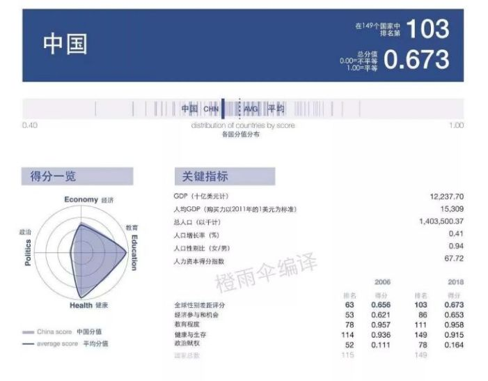
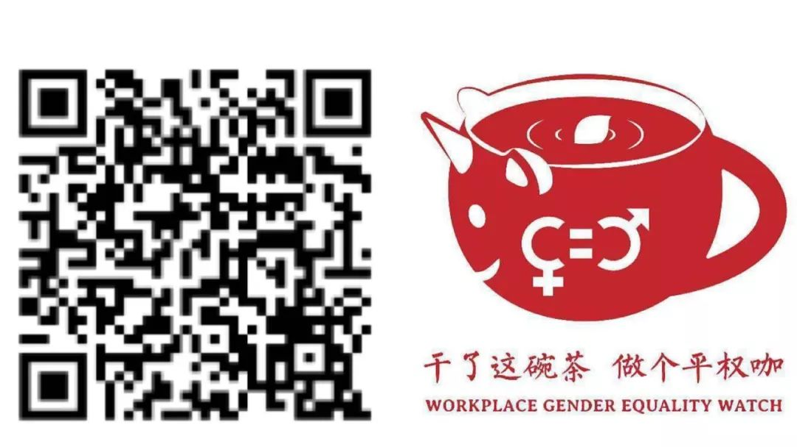

你有没有觉得这些话很耳熟？当你谈到女性在各方面受到歧视和不公正待遇时，这些话就会在你耳边嗡嗡作响。
OK，那我国女性真实的就业处境到底如何？我们不说空话，接下来我们用数据说话。
2018年底，世界经济论坛发布了《2018年全球性别差距报告》，报告中以“教育”、“医疗”、“经济”、“政治”这四个指标为准对149个国家的性别差距作出了排名，中国排名103。
其中，我国经济参与和机会指标排名86，处于中等偏后。报告指出，以目前的变化速度，需要108年的时间才能消除全球性别差距，而实现经济方面的性别平等需要202年。
中国想要实现经济上面的性别平等需要多少年呢？我想，有生之年应该是没办法实现。[1]

在最近的3月下旬，成都举办了首届中国就业女性发展大会，在大会上国务院发展研究中心市场经济研究所原所长任兴洲提到，中国的劳动参与率是76%，中国男性占90%以上都参与劳动，与其他国家男性劳动参与率基本相差不大。
中国女性的劳动参与率超过70%，远超世界平均水平（全球女性参与率为48.5%，发展中国家69.3%，发达国家52.6%）[2]
在上个月煎茶小组发起了【职场烂番茄评选】的投票中，18个曝光的职场性别歧视案例中，有3个得票最高，分别是：
第1名：女程序员阿里面试，3轮技术面顺利通过，hr 询问完她的婚姻、生育状况后，认为不符合岗位条件，最后被淘汰。
第2名：2019年国家公务员招录考试性别歧视，3383个岗位（占比35.03%）存在性别限制条件。
第3名：智联招聘：女职员平均薪酬比男性低23%，女性高层仅占18.7%。
以上票选出的三个案例就可以体现女性在要进入职场以及进入职场后所面临的几个障碍，在职场没有一个阶段女性是可以轻轻松松度过的。
女性的平均工资不仅比男性低，女性高管数量远远少于男性。有人可能会说“还不是因为你们女性能力不行”。
然而，女性在职场面临着玻璃天花板，女性的低工资、低职位并非由于其缺乏胜任的能力。这种种现象恰恰反映了劳动市场的性别歧视问题。
在@就业性别歧视监察大队收到的举报中，企业类型不同，城市各不相同，但相同的是其中要求仅限男性。可能有人会说“仅限男性肯定就是女性不适合做”。
OK，你看看举报的就业歧视事件中哪种职业女性不适合：宿管员、意大利语翻译、营销/业务员、专职辅导员、图书策划编辑、检察官助理、文职人员……
THE END
我们看到的转变是国家出台政策治理职场性别歧视，但@就业性别歧视监察大队近期每月仍会收到100多条对招聘性别歧视事件的举报。政策的出台是好的，然而是否能够得到落实令人担忧。至今就业性别歧视的现象依然随处可见。
也许，你永远无法叫醒装睡的人。
参考：
[1]数据来源：全球经济论坛《2018全球性别差距报告》
[2]数据来源：财经网《中国女性劳动参与率世界第一“她经济”消费市场预计5万亿元》
扫描或长按二维码关注煎茶小组
感谢持续关注就业性别歧视

欢迎大家给我打赏